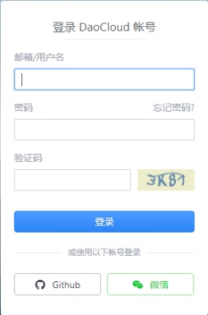
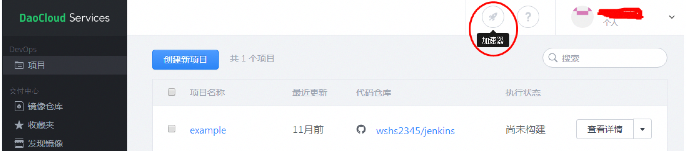
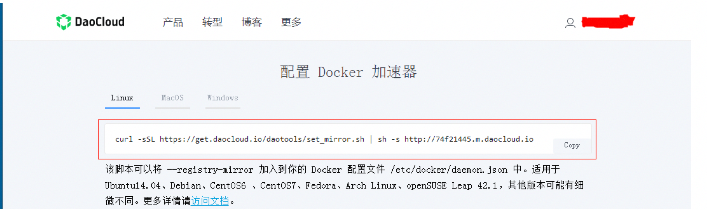

docker加速器
加速器简介
在国内使用docker的官方镜像源，会因为网络的原因，造成无法下载，或者一直处于超时。所以我们使用 daocloud 的方法进行加速配置。
方法:
访问 daocloud.io 网站，登录 daocloud 账户

登录成功后点击右上角的 加速器

在新窗口处会显示一条命令，

在ubuntu终端中执行这条命令
curl -sSL https://get.daocloud.io/daotools/set_mirror.sh | sh -s http://74f21445.m.daocloud.io
加速器配置
修改 /etc/docker/daemon.json文件
{"registry-mirrors": ["http://74f21445.m.daocloud.io"], "insecure-registries": []}
注意：
docker cloud加速器的默认内容是少了一条配置，所以我们要编辑文件在后面加上绿色背景的内容，然后再重启docker
重启docker的服务
systemctl restart docker